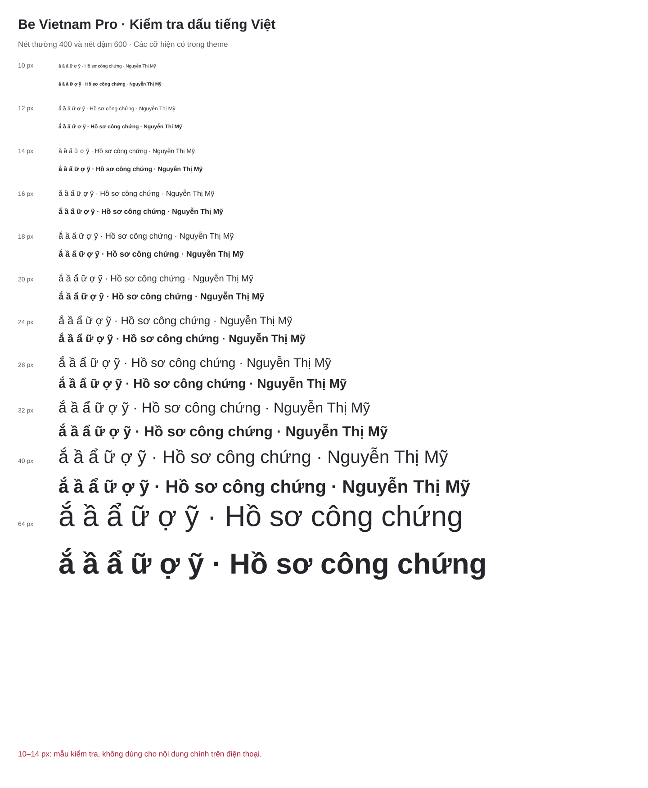

A · Hướng thay thế
Hồ sơ xác nhận
Tờ giấy gấp góc và dấu kiểm mở: quen thuộc, rõ ở cỡ nhỏ, gắn với việc của người dùng.
Màu · Một màu · Đảo trắng
Dịch vụ công chứng trực tuyến với ngôn ngữ gần gũi, thông tin rõ ràng và tinh thần phục vụ tận tâm.
Hướng B đã được duyệt ngày 25/10/2026. Các hình minh họa không phải giao diện đã triển khai, chứng nhận pháp lý hay đặc tả hệ thống thiết kế.
Tờ giấy gấp góc và dấu kiểm mở: quen thuộc, rõ ở cỡ nhỏ, gắn với việc của người dùng.
Màu · Một màu · Đảo trắng
Chữ T và nét ký chuyển động: mang tính cá nhân hơn, nhưng khó nhận ra ở cỡ nhỏ.
Màu · Một màu · Đảo trắng
Khung tám cạnh gợi dấu xác nhận: trang trọng, nhưng dễ bị hiểu thành con dấu chính thức.
Màu · Một màu · Đảo trắng
Giữ #AA1D39 để nối tiếp nhận diện hiện có. Nền sáng và khoảng trắng làm dịu sắc đỏ; màu trạng thái luôn đi cùng nhãn chữ.
| Cặp màu | Tỷ lệ | Chữ thường AA |
|---|---|---|
| Nút chính / nền trắng | 7.13:1 | Đạt |
| Thương hiệu / giấy ấm | 6.73:1 | Đạt |
| Chữ chính | 14.28:1 | Đạt |
| Chữ phụ | 6.29:1 | Đạt |
| Viền trường nhập | 4.29:1 | Không đạt |
| Hoàn tất | 6.23:1 | Đạt |
| Chờ xử lý / thanh toán | 6.04:1 | Đạt |
| Đang xử lý | 6.17:1 | Đạt |
| Chờ ký số | 6.53:1 | Đạt |
| Bị từ chối | 5.78:1 | Đạt |
Tất cả hồ sơ, phí và mốc thời gian dưới đây là dữ liệu minh họa. Hướng B được dùng nhất quán để đánh giá cảm giác thương hiệu.
Một họ chữ, hai vai trò: 600 cho tiêu đề và nhãn; 400 cho nội dung. Giữ tiếng Việt dễ đọc thay vì thêm một font trang trí. Phóng to mẫu để kiểm tra dấu ở kích thước thật.
